Material-UI v4 is out 🎉
May 23, 2019
React components for faster and easier web development. Build your own design system, or start with Material Design.
Material-UI v4 has finally arrived. We are so excited about this release, as it defines better foundations for the UI components. Thank you to everyone, especially to the team, and to everyone who's contributed code, issue triage, and support. Thank you.
✨✨✨ See the 4.0.0 Release Note on GitHub. ✨✨✨
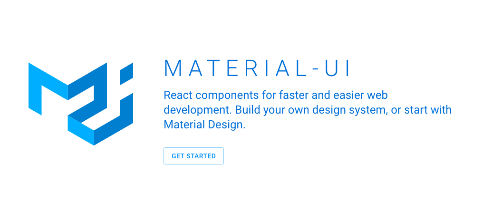
https://material-ui.com/
Summary
High-level goals for v4
Material-UI v1 was released one year ago. Version 4 is our most important major release since then. For those unfamiliar with the history of the project, we didn't release a v2, and v3 only introduced a slight browsers support change.
This release happens within our fixed frequency release strategy. We try to release a major at least every 12 months and at most every 6 months. The migration from v0 to v1 was painful, it almost felt like using two different UI libraries. We've done our best to minimize the time needed to migrate from v3 to v4. To help ease the transition, you can follow this migration guide 📚. It shouldn't take more than a few hours.
This release is influenced by two major factors. First, following the Developer Survey we ran in March, we have analyzed the results and used them to change our priorities for the coming year. Secondly, we needed to be up to date with the latest best practices in the React community and with the Material Design Specification.
Customization
The Material Design team at Google has made the customization of their design system framework a core feature: Material Theming. It's an important dimension of the library for us. Since the release of v1, we have been improving the component customization demos, release after release. We demonstrate a wide range of different designs:
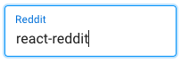
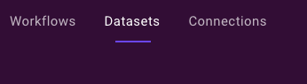
After listening to v3 customization experiences of hundreds of developers, we realized that we could do better. We have found 4 classes of common problems.
- CSS specificity. The developers' style specificity needs to be higher to win over the style Material-UI injects in the page. By default, Material-UI injects its style at the end of the
<head>element. However, styled components and other popular styling solutions inject the style just before it, losing specificity. To solve the problem, we have introduced a new prop:injectFirst.
import { StylesProvider } from '@material-ui/styles';
<StylesProvider injectFirst>
{/* Your component tree.
Styled components can override Material-UI's styles. */}
</StylesProvider>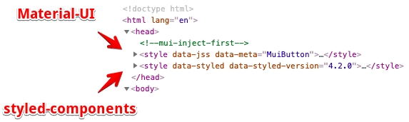
The DOM output once injectFirst is used.
- classes boilerplate. Early in the v1 effort, we decided to use a CSS-in-JS styling solution: JSS. The large majority of the CSS-in-JS solutions output non-deterministic class names, e.g.Â
.fHmkjM. This design decision helps the isolation of the style of each component, however, it makes the overrides harder. We introduced aclassesAPI in v1 to target all our elements as an attempt to mitigate this problem. We have observed the use of this API for months and have seen many people struggling with it. It can be challenging to apply the class name on the right element and requires boilerplate as well. As an attempt to further improve the situation, we have changed the class name generation to output global class names, while keeping theclassesAPI working as before 💅.
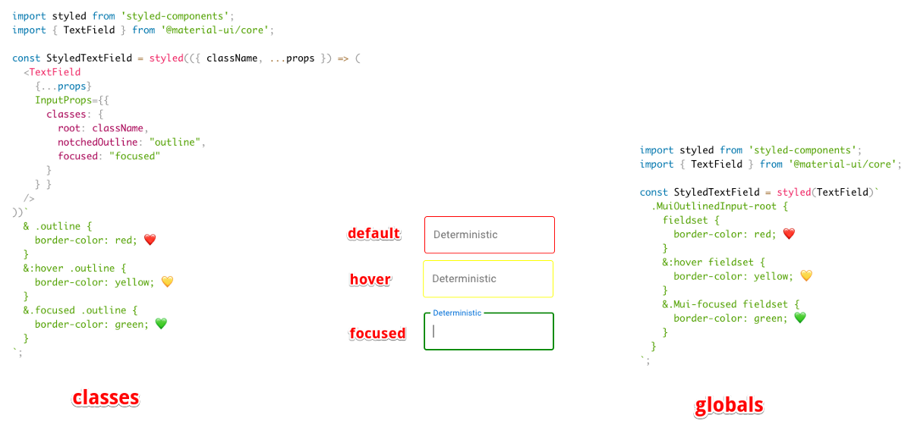
side by side comparison of both valid classes vs global approaches.
âš ï¸ Using global class names provide more power but comes with responsibility. We encourage patterns that increase your custom style isolation.
- Pseudo-classes. A pseudo-class is a keyword added to a selector that specifies a special state of the selected element. The native elements support a wide range of pseudo-classes, the most popular ones being:Â
:focus,Â:hover,Â:active. Sometimes, Material-UI can't use a pseudo-class as the state doesn't exist in the platform, e.g. the selected state of a menu item. Material-UI implements support of eight different custom pseudo-classes. It's important to understand that you need to increase the specificity when using a pseudo-class. For instance:
.MenuItem {
color: black;
}
.MenuItem.Mui-selected { /* We increase the specificity */
color: blue;
}- Dynamic variations. As one of the most requested features, we have added the support for style functions:
const useStyles = makeStyles({
// style rule
foo: props => ({
backgroundColor: props.backgroundColor,
}),
bar: {
// CSS property
color: props => props.color,
},
});
function MyComponent() {
// Simulated props for the purpose of the example
const props = { backgroundColor: 'black', color: 'white' };
// Pass the props as the first argument of useStyles()
const classes = useStyles(props);
return <div className={`${classes.foo} ${classes.bar}`} />
}Documentation
Documentation was reported as the 3rd most critical pain point in the developer survey. We have fixed some of the reported issues and aim to continuously improve going forward.
- TypeScript. TypeScript's growth is impressive, the traffic of their documentation website has grown by a factor of 6 in 3 years. Material-UI v1 was released with built-in TypeScript definitions, but we needed to do more. Sebastian has led the effort to migrate all the demos from JavaScript to TypeScript. This has two important implications. First, we type check our demos, this drastically improves our TypeScript test coverage. We have fixed many issues during the migration. Second, if you are writing your application with TypeScript, you can directly copy & paste our demos without needing to convert them, or having to fix the obscure errors.
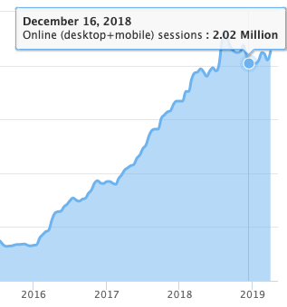
https://www.typescriptlang.org traffic estimation over time.
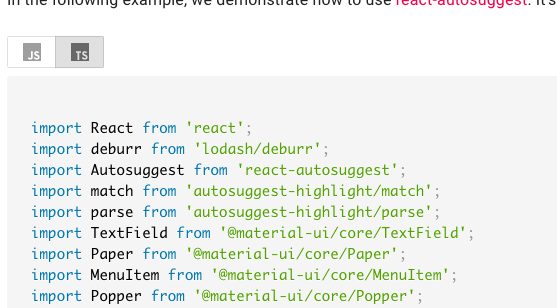
Use the JS/TS toggle to see code in JavaScript or TypeScript
i18n. People come to Material-UI's documentation from all around the world. We want to include as many people as possible 🌎🌍🌏. We have completed the effort started in v3 by working on the Algolia search support, Google search indexing, Table Of Contents and Side Nav infrastructure.
We would like to thank Danica Shen, Dominik Engel, and Jairon Alves Lima for their heroic work on the 🇨🇳, 🇩🇪 and 🇧🇷 translations, while not forgetting the other 348 (and growing) translators.
Best practices. We are now recommending the use of the hooks API over the classes API wherever possible. We have migrated a large portion of the demos to showcase a single approach.
A better UX. We have changed the menu organization to group all the components under a single navigation item. We have changed the background color to white to increase the text contrast and readability.
Performance
You may be afraid that using Material-UI's components will bloat and slow down your website/application. Would you be better off writing your own components? Well, it's our mission to make this cost as minimal as possible 🚀.
- Tree shaking. Material-UI v4 is the first version to support native tree shaking with ES modules. This has one important DX benefit—you can now use destructured imports when importing multiple components:
import {
Table
TableBody,
TableCell,
TableHead,
TableRow,
Paper,
} from '@material-ui/core';- Bundle size reduction. The bundle size went from 95 kB gzipped to below 80 kB gzipped between the last v3 release and the first v4 beta release. This is remarkable considering that we have added new features and components along the way 😍! This was made possible by many small incremental changes: tree shaking, removal of multiple internal dependencies, hooks migration, clsx migration, smart Babel plugin, etc.
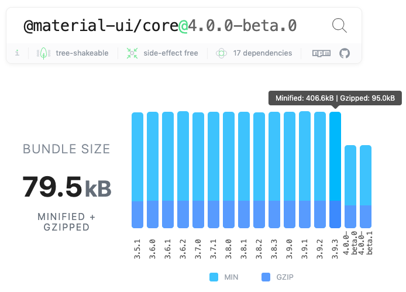
A -15% bundle size reduction. âš ï¸ Please don't use the absolute number to compare different UI libraries. Nobody should import the whole barrel index.js file. What matters is the cost of the individual modules you import.
- Continuous bundle size tracking. This bundle size reduction is only possible because we track this metric in each pull request. We have improved our strategy moving from size-limit to a React inspired solution.
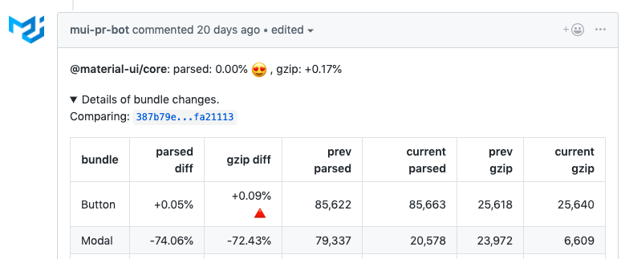
Fine level tracking
- Preact X. We have introduced a working integration example with Preact. Preact is a fast, 1/10 smaller alternative to React, with the same modern API. We will do our best to support it.
- Runtime performance. We have heard that some people struggle with the runtime cost of using Material-UI. We have solved a few problems reported, but nothing systematic. We have observed a slight gain by moving from the classes API to the hooks API. However, it's hard to make progress as we lack a properly setup performance bench. It's something to consider for v5.
Preparing for the future
Material-UI v4 depends on React ≥16.8.0. This is the first version of React that supports the new Hooks API.
- Ref forwarding. Most of the time, you use the
refprop to access the underlying DOM node of a React element. You might want to focus an element, compute the position of an element, and so on. You should never need to access a Material-UI component's instance methods, they are considered private. The components expose anactionwhen it's really needed. For instance, you might want to update the tab indicator position when it goes out of sync with the tab item position. To ease this use case, Sebastian has lead an effort to implementReact.forwardRef(). In practice, this means that you can retrieve a reference to the DOM node like you would do with a built-in component (button,div, etc.):
import { Button } from '@material-ui/core';
function MyButton() {
const myRef = React.useRef();
return <Button ref={myRef}>;
}Hooks migration. While there is no plan to remove classes from React, the React Team encourages new code to be written with the hooks API. Josh has led an effort to rewrite the vast majority of our components with the hooks API. The change has a couple of advantages.
Not all the platforms we support can use the class API natively, so we transpile the syntax with Babel. Functions are supported everywhere, they require fewer line of code. We have observed a -2% gzipped bundle reduction by removing the need to transpile classes.Â
It reduces the noise in the React Dev Tools ⚛️, since we could reduce the number of intermediary elements from 5 to 2 in the most common cases. We have found the hooks API easier to work with: to write, to read, and to change. This is a net positive for everyone's productivity. People read our source to find inspiration, so we should do our best to promote the best patterns.
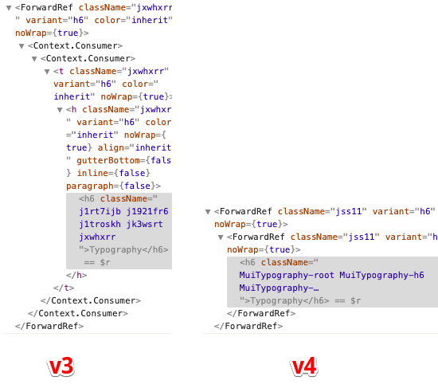
React Dev Tools output for one Typography element in production (this POC might further improve the situation).
Concurrent mode. React has shared its release timeline for the important features coming into React. Concurrent mode should be released within the next few months. Concurrent Mode lets React apps be more responsive by rendering component trees without blocking the main thread. We have worked on getting ready for it. Most of the work was related to fixing the <React.StrictMode> warnings. You should soon be able to leverage it 🔥.
Shallow tests. We have removed the majority of our internal shallow tests to rely on full mount tests.
Material Design
Most of our users are interested in the good looking functional aspect of our components, rather than in a strict application of the Material Design specification. However, we think that it's important for us to keep up to date with the guidelines. The specification received it's most significant update since Google made it the design language for its apps in 2014, at Google I/O 2018.
The Material Design "v2" announcement caught us by surprise when we released Material-UI v1. We have worked on upgrading our components since then. In v4, we have updated the styles of the Tab, Snackbar, Checkboxes, Radios, Switches, List, Dialog, and other components ✨.
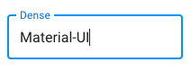
Dense Outlined text field

Dense Filled text field
What's new?
There are so many new things, we can't be exhaustive. Aside from what we have already announced, you will find:
- A new strapline "React components for faster and easier web development. Build your own design system, or start with Material Design." that better embodies our mission and emphasize the customizability potential.
- New templates.
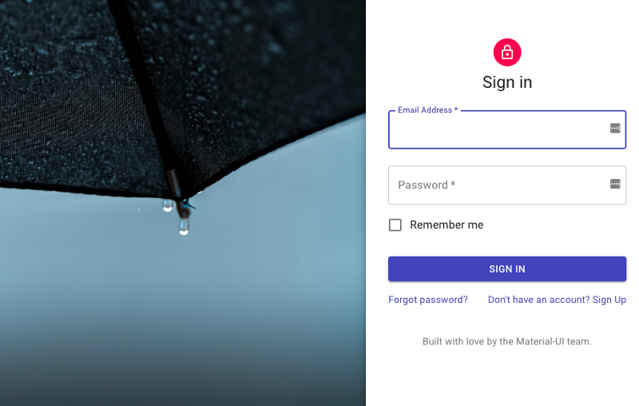
One example among others
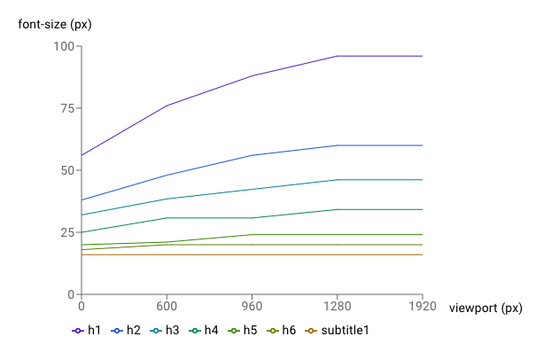
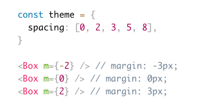
An application example of the Box component.

An example of the new spacing helper API.
- A new @material-ui/pickers package created and supported by Dmitriy Kovalenko 📅.
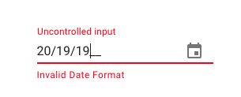
Keyboard support
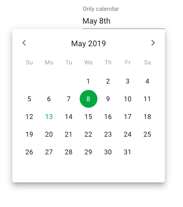
Inline mode
- A new @material-ui/styles package that isolates our styling solution. It can be used independently of the core components. It comes with a hooks API that requires less boilerplate 😍
import React from 'react';
import { makeStyles } from '@material-ui/styles';
const useStyles = makeStyles({
root: {
background: 'linear-gradient(45deg, #FE6B8B 30%, #FF8E53 90%)',
border: 0,
borderRadius: 3,
boxShadow: '0 3px 5px 2px rgba(255, 105, 135, .3)',
color: 'white',
height: 48,
padding: '0 30px',
},
});
export default function Hook() {
const classes = useStyles();
return <button className={classes.root}>Hook</button>;
}âš ï¸ Be aware of the difference between @material-ui/styles and @material-ui/core/styles. The latter contains the default theme.
- A well supported Gatsby plugin for @material-ui/styles.
- A Cookbook published by Packt and written by Adam Boduch.
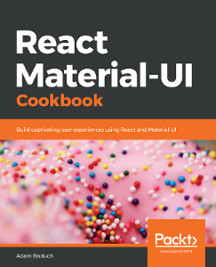
What's next?
Together, we have accomplished most of the objectives we defined a year ago in the v1 release blog post. We're proud of everyone who contributed. We're going to try to execute these new objectives with the same regularity:
- More components. This is, by far, the most requested improvement dimension of the library. We have identified a few useful components we are interested in building:
- Layout components
- AutoComplete/ ComboBox / Dropdown List / MultiSelect
- Slider in core and the support for range values
- Tree view
- Dropzone / Upload
- Skeleton
- Jumbotron
- Carousel
- Rating
- Timeline
- Advanced table
Let us know the components you want! 🚀
- Documentation. The documentation is paramount. We are working on a page ranking mechanism that will help us better prioritize our effort on the documentation.
- Use
systemin the core. We have received great feedback on the new system package. Going forward, we will try to move it to the core components. Ideally, you should be able to use dynamic color & variants from your theme as well as have access to all the props:
import { Button } from '@material-ui/core';
<Button mt={{ xs: 2, md: 3 }}>Hello worlds</Button>- Styled components. We have seen many people asking for migration to styled components. We want Material-UI v5 to be better aligned with the community's best-loved tools, but at the same time, we don't want to break your code. So we will work on isolating the components from the styling solution. The new @material-ui/styles package is the first step in this direction. We envision a world where you can use Material-UI styled with styled components, linaria, and JSS or without any styles. People should be able to use their preferred styling solution without paying the cost of two CSS-in-JS runtimes.
- Accessibility. While we try to fix all accessibility issues as they are reported by our users, we feel that we can do better. We want to run a professional ADA audit of all our components ♿️.
Premium themes store ✨
How are we going to sustain this ambitious roadmap? We will follow the Bootstrap model. We are working on a Premium themes store.
We have built partnerships with the best theme authors of the ecosystem. Within a few weeks, you should find a collection of the best Material-UI templates and themes 😍.
Thank you
Finally, one last thank you to everyone who's contributed to Material-UI v4. I'm so excited about this release! It's just the beginning. We will keep working hard on delivering the best possible React UI framework components.
You can find the same post on Medium.